TopoCode 使用文档
版本: 0.1.0 beta | 源码架构分析与学习工具
一、产品简介
TopoCode 是一款面向开发者的源码架构分析与学习工具。它能自动解析项目源码结构，生成多层级的组件依赖图、调用关系分析和架构分析报告，并支持 AI 辅助分析。
核心能力
| 能力 | 说明 |
|---|---|
| 多语言解析 | 基于 Tree-sitter AST 解析，支持 11 种语言（C、C++、C#、Java、JS、TS、Python、Go、Rust、PHP、Swift） |
| 架构分析 | 符号提取 → 调用图 → 依赖图 → Louvain 社区发现 |
| AI 报告生成 | 基于 LLM 的组件分析、架构文档自动生成 |
| 可视化 | D3.js 力导向图、Mermaid/PlantUML 图表、Pixi.js 渲染 |
| 知识管理 (待开发) | 知识图谱、多维分类、TopoScript 动画演示 |
| 多项目 | 项目分组、任务管理、分析报告管理 |
二、安装与启动
环境要求
| 依赖 | 版本要求 |
|---|---|
| Node.js | >= 18 |
| npm | >= 9 |
| Python | >= 3.10 |
| 系统 | Windows / macOS / Linux |
从源码安装
# 1. 克隆仓库
git clone https://github.com/topocode/topoone-ui.git
cd topoone-ui
# 2. 安装前端依赖
npm install
# 3. 创建 Python 虚拟环境并安装后端依赖
python3 -m venv .venv
source .venv/bin/activate # Linux/macOS
pip install -r backend/requirements.txt
# 4. 构建并打包
npm run build
npm run package开发模式运行
# 终端 1：启动前端开发服务器
npm run dev:vite
# 终端 2：启动 Python 后端
source .venv/bin/activate
python backend/main.py --http-port 3456
# 或者一键启动（Electron + 后端）
npm run dev获取安装包
npm run dist:linux # Linux (.AppImage/.deb/.rpm)
npm run dist:mac # macOS (.dmg/.zip)
npm run dist:win # Windows (.exe NSIS 安装包)三、界面总览
TopoCode 采用 VS Code 风格的 IDE 布局。
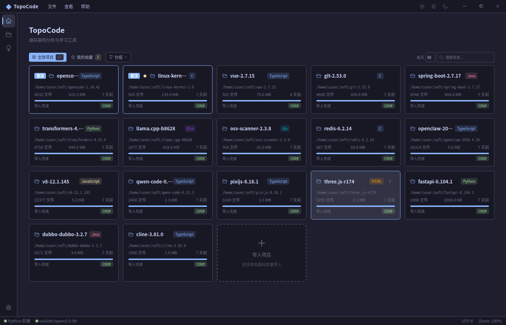
布局元素
| 区域 | 功能 |
|---|---|
| Activity Bar | 左侧导航栏：首页(项目)、代码、分析、知识库、设置 |
| Top Bar | 菜单栏 + 主题切换 + 导入按钮 + 缩放 |
| Left Panel | 项目列表、文件树 |
| Content Area | 各页面主内容（由路由切换） |
| Right Panel | AI 助手、代码索引、报告任务列表、调试面板 |
| Status Bar | 后端连接状态、AST 就绪状态、Git 分支、AI 模型 |
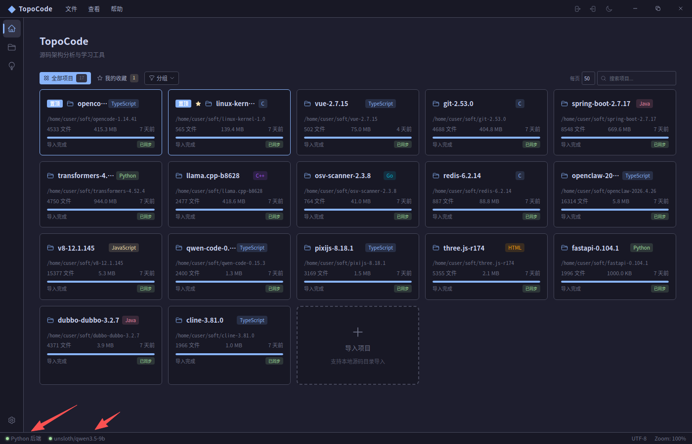
页面路由
| 路由 | 页面 | 功能 |
|---|---|---|
/home | 项目导入 | 项目管理、分组、文件树、任务创建 |
/code | 代码解析 | 任务创建、文件统计、代码预览 |
/analysis | 代码分析 | 分析报告、社区图谱、AI 分析 |
/knowledge | 知识库 (待开发) | 知识图谱、文档管理、动画播放 |
/coder | AI 助手 (待开发) | 多会话聊天、代码问答 |
/user | 设置 | 模型配置、主题编辑、通用设置 |
四、项目管理
4.1 项目列表

4.2 导入项目
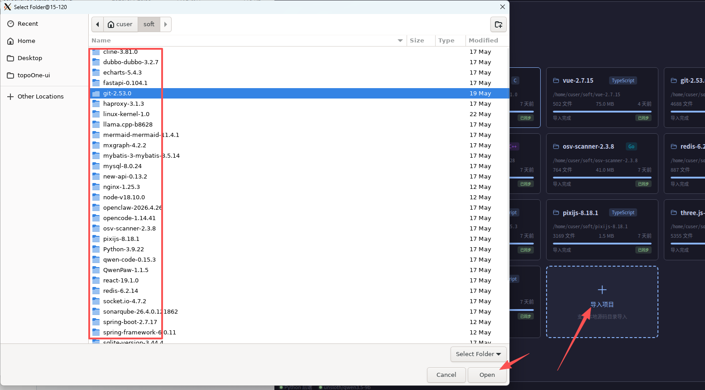
- 点击 TopBar 的 导入 按钮，或使用拖拽到
ImportZone - 选择本地源码目录
- 系统自动检测项目语言和文件结构
4.3 项目分组管理
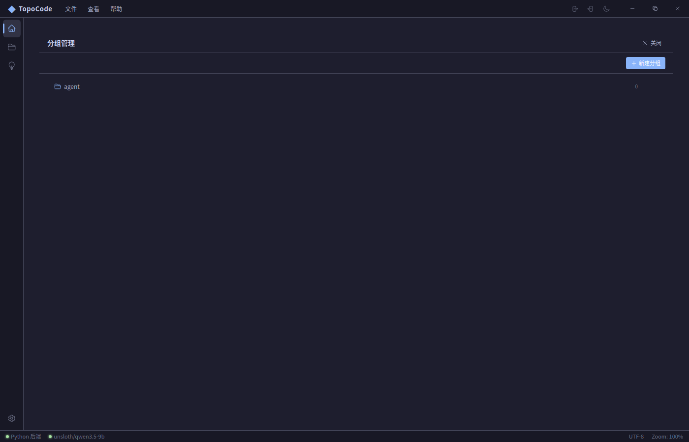
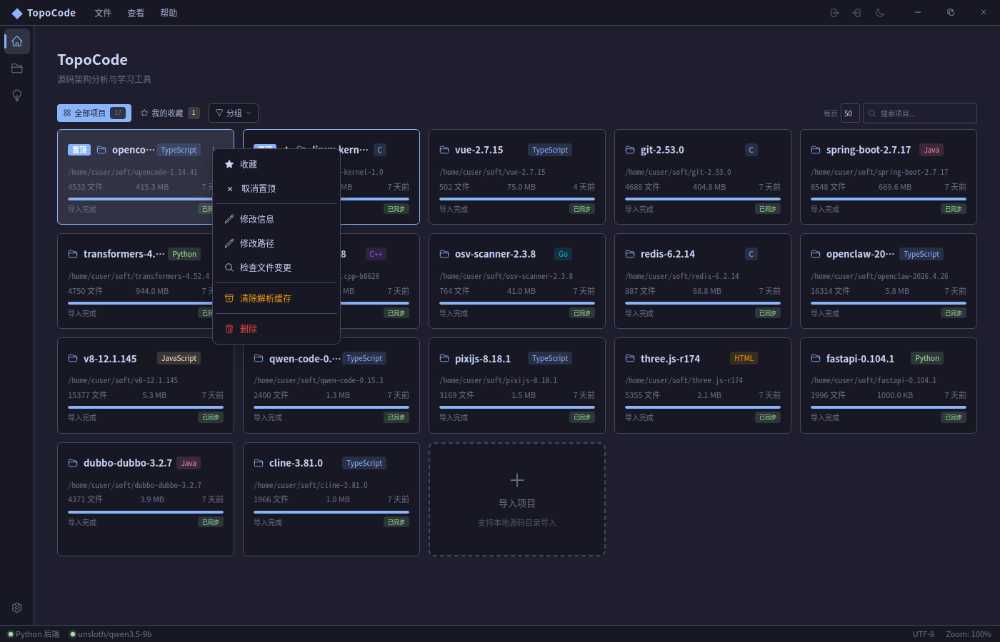
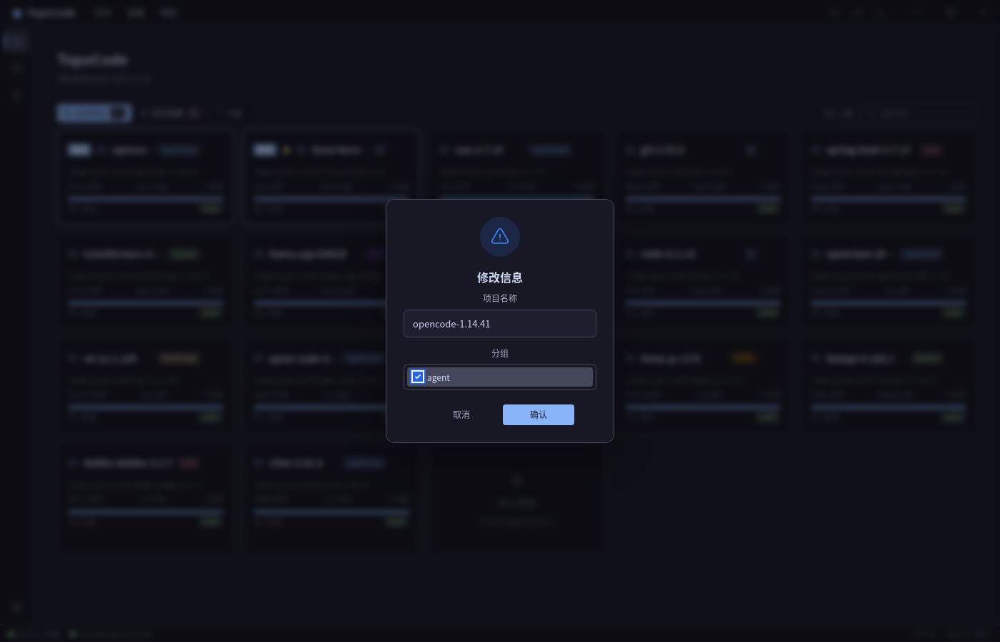
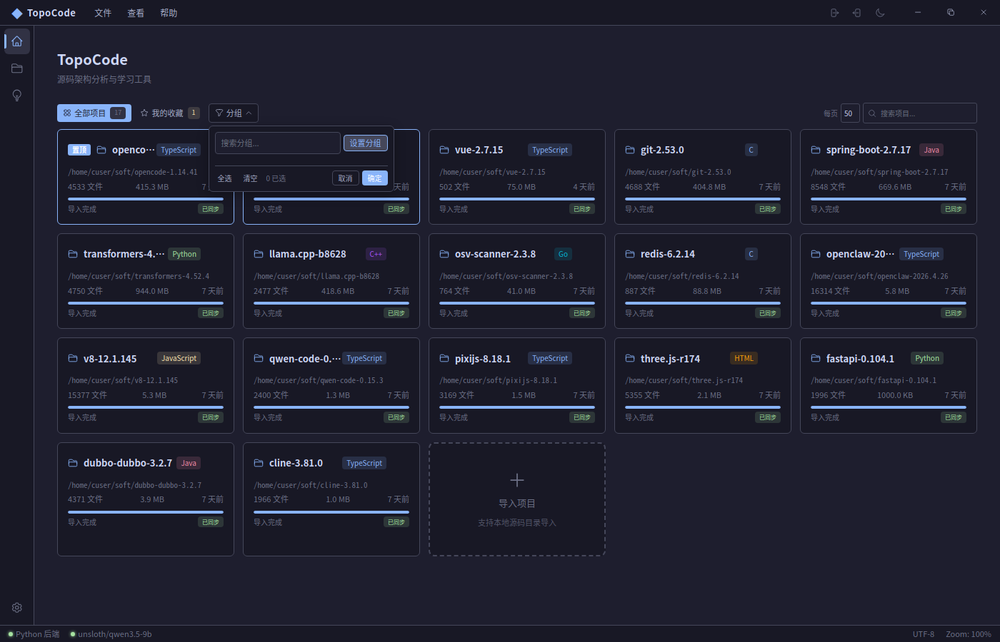
通过 GroupManager 创建树形分组（M:N 关系），便于组织多个项目。
4.4 文件树浏览
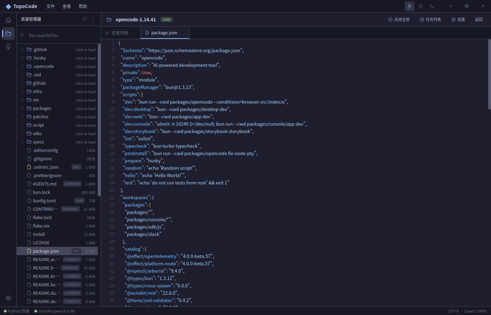
- 左侧面板展示项目文件树，支持懒加载、搜索、筛选
- 点击文件可在
FilePreview中查看高亮代码 FileStatsPanel展示各语言行数统计
4.5 项目管理操作
| 操作 | 说明 |
|---|---|
| 收藏 | 星标项目，快速访问 |
| 固定 | 固定在列表顶部 |
| 清除缓存 | 选择性清除分析缓存数据 |
| 删除 | 移除项目（不影响源文件） |
五、代码解析
5.1 创建分析任务
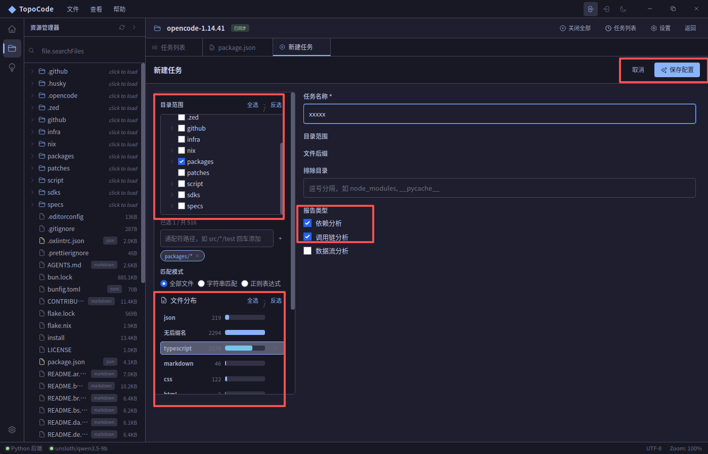
| 配置项 | 说明 |
|---|---|
| 范围 | 选择要分析的文件/目录 |
| 扩展名 | 限定文件类型（如 .py, .js） |
| 排除目录 | 跳过无需分析的目录（如 node_modules） |
| 报告类型 | 选择要生成的分析报告类型 |
5.2 任务列表
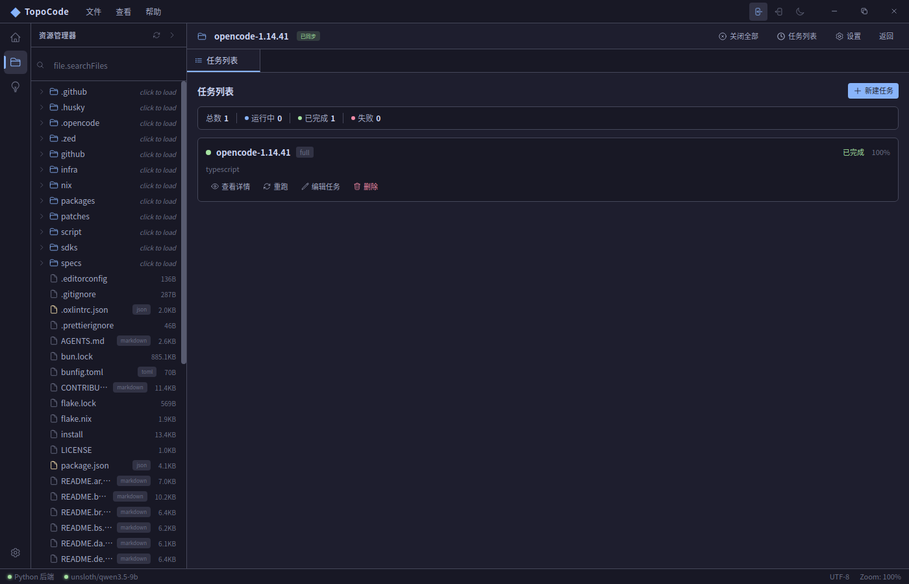
5.3 分析管道
系统自动执行 6 步分析管道：
Step 1: AST 解析 → Tree-sitter 解析语法树
Step 2: 符号提取 → 提取函数、类等全局符号
Step 3: 调用图提取 → 函数调用关系分析
Step 4: 依赖图提取 → 模块/文件依赖关系分析
Step 5: 社区发现 → Louvain 算法检测功能模块
Step 6: 结果汇总 → 汇总分析结果5.4 任务详情
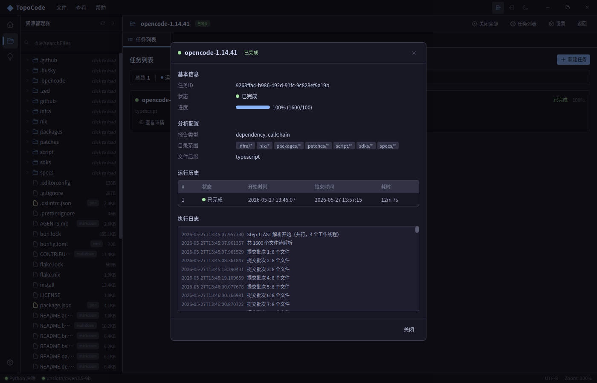
- AST 视图：语法树结构
- 调用链：函数间调用关系
- 依赖图：模块/文件依赖关系
- 社区结果：Louvain 算法划分的功能模块
- 执行日志：每一步的执行日志
5.5 文件统计

六、代码分析
6.1 报告生成管道
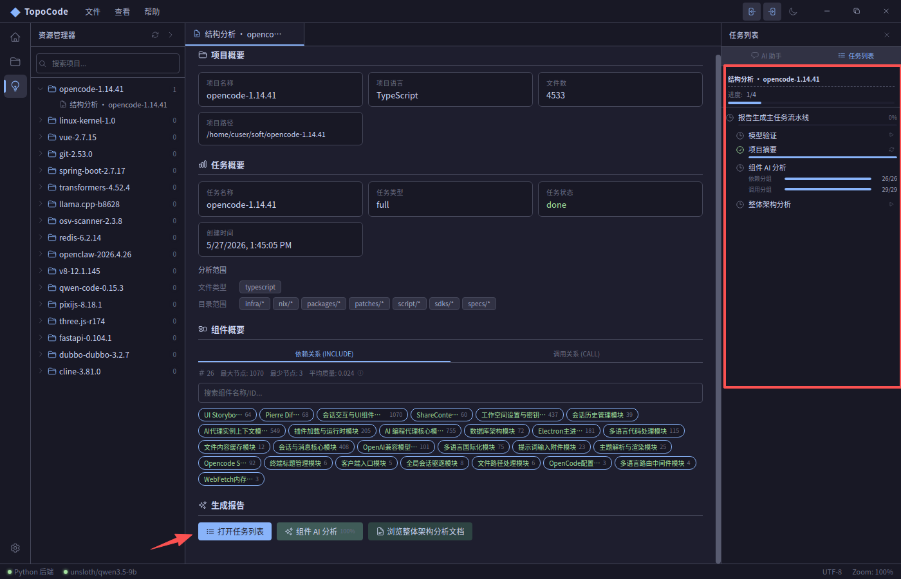
Step 0: 文件摘要预处理 → 提取 README/依赖文件，生成文件摘要
Step 1-5: 架构分析 → LLM 逐层分析架构
社区 AI 分析 → 对每个社区进行 AI 解读
整体架构文档 → 生成全局架构报告6.2 社区分析

- 多层级：支持 L0/L1 等多层级社区展开
- 边类型：支持
call和include两种关联 - AI 解读：LLM 自动生成功能描述和架构说明
- 图表渲染：为每个社区生成 Mermaid/PlantUML 图
6.3 子文档查看
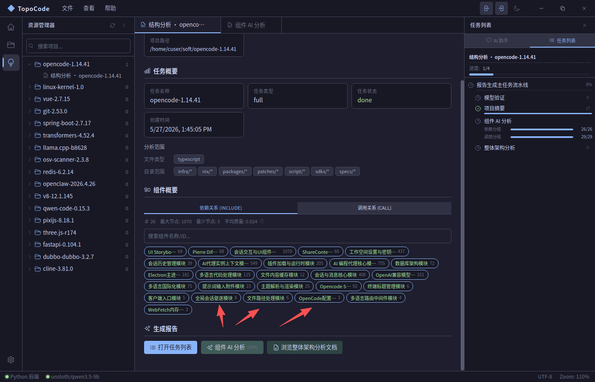
- Markdown 文档渲染
- Mermaid 图表内联渲染
- PlantUML 图表内联渲染
- 社区链接跳转
- 编辑/保存
6.4 Mermaid 图表渲染
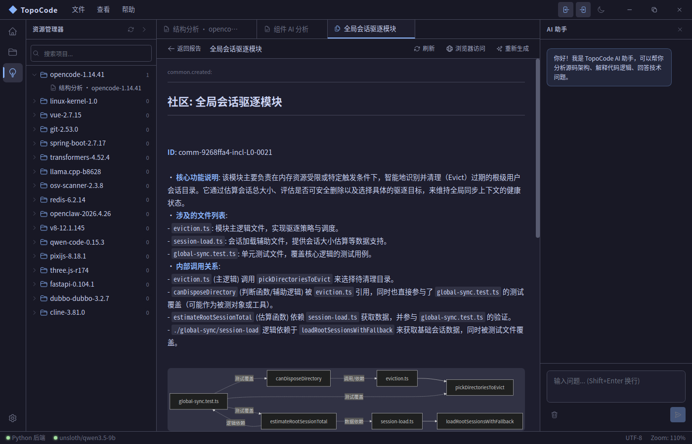
6.5 浏览器端查看
启动后端后，可通过浏览器访问 http://localhost:3456 查看架构文档、社区目录和代码。
七、AI 助手
7.1 会话管理

- 多会话：创建多个独立对话
- 会话切换：通过 Tab 栏快速切换
- 会话删除/清空：管理会话历史
7.2 对话界面

| 模式 | 说明 |
|---|---|
| 聊天 (Chat) | 自由对话，代码问答 |
| 工具调用 (Tools) | 调用分析工具（PlantUML 渲染等） |
| 结构化输出 | 按模板生成结构化报告 |
7.3 LLM 配置
兼容 Ollama、LM Studio 和 OpenAI 兼容 API。首次使用需在设置页面配置模型。
八、知识库
8.1 知识图谱

8.2 知识文档管理

8.3 分类管理
| 维度 | 说明 |
|---|---|
| 生命周期 | 需求/设计/开发/测试/部署/运维 |
| 技术栈 | 前端/后端/数据库/基础设施 |
| 抽象层 | 架构/组件/模块/函数 |
| 用途 | 业务/技术/管理/学习 |
8.4 TopoScript 动画

内置 TopoScript 动画引擎：脚本编排、步骤同步、SVG/Canvas 双渲染、导出为 HTML/图片。
九、设置与配置
9.1 模型配置
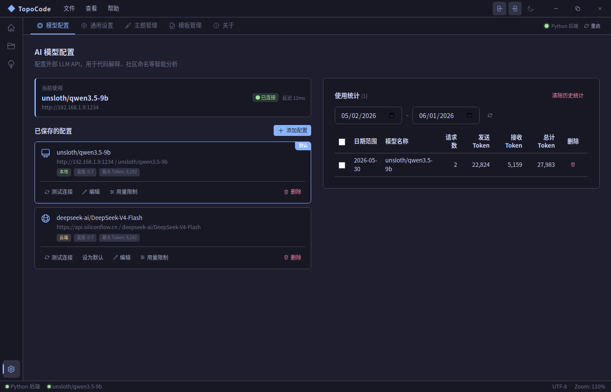
| 功能 | 说明 |
|---|---|
| 添加模型 | 配置名称、提供商、API 地址、密钥 |
| 测试连接 | 验证模型是否可达 |
| 默认模型 | 设置 AI 助手的默认模型 |
| 使用统计 | 查看各模型调用情况 |
9.2 主题系统

基于 Catppuccin Mocha 色彩体系，支持预设主题、自定义编辑器、导入/导出。
9.3 通用设置
| 设置项 | 说明 |
|---|---|
| 语言 | 中文 / English |
| 字体大小 | 实时生效 |
| 自动保存 | 自动保存间隔 |
| 分页大小 | 项目列表每页数量 |
| ZMQ 端口 | DEALER / PUB 端口配置 |
十、FAQ
Q: 支持哪些编程语言？
目前支持 11 种语言：C、C++、C#、Java、JavaScript、TypeScript、Python、Go、Rust、PHP、Swift。
Q: 分析时后端未启动？
确保 Python 后端已启动。Status Bar 右下角显示后端连接状态（绿色=已连接，红色=异常）。
Q: 如何配置 AI 模型？
进入设置页面 → 模型配置 → 添加模型。推荐使用 Ollama 或兼容 OpenAI API 的服务。
Q: 分析报告如何导出？
报告生成后可通过 SubDocViewer 查看，或通过浏览器访问 http://localhost:3456 查看在线版本。
Q: 如何清除分析缓存？
在项目卡片上点击右键 → 清除缓存，可选择按表清除。
遇到问题？请访问 GitHub Issues 提交反馈。
TopoCode Usage Guide
Version: v0.1.0 beta | Source Code Architecture Analysis & Learning Tool
1. Introduction
TopoCode is a source code architecture analysis and learning tool for developers. It automatically parses project source code, generates multi-level component dependency graphs, call chain analysis, and architecture analysis reports with AI assistance.
Core Capabilities
| Capability | Description |
|---|---|
| Multi-language Parsing | Tree-sitter AST parsing, supports 11 languages (C, C++, C#, Java, JS, TS, Python, Go, Rust, PHP, Swift) |
| Architecture Analysis | Symbol extraction → Call graph → Dependency graph → Louvain community detection |
| AI Report Generation | LLM-powered component analysis, automated architecture document generation |
| Visualization | D3.js force graphs, Mermaid/PlantUML diagrams, Pixi.js rendering |
| Knowledge Management (Planned) | Knowledge graphs, multi-dimensional classification, TopoScript animation |
| Multi-project | Project grouping, task management, analysis report management |
2. Installation & Setup
Requirements
| Dependency | Version |
|---|---|
| Node.js | >= 18 |
| npm | >= 9 |
| Python | >= 3.10 |
| OS | Windows / macOS / Linux |
Install from Source
# 1. Clone the repository
git clone https://github.com/topocode/topoone-ui.git
cd topoone-ui
# 2. Install frontend dependencies
npm install
# 3. Create Python virtual environment and install backend deps
python3 -m venv .venv
source .venv/bin/activate
pip install -r backend/requirements.txt
# 4. Build and package
npm run build
npm run packageDevelopment Mode
# Terminal 1: Frontend dev server
npm run dev:vite
# Terminal 2: Python backend
source .venv/bin/activate
python backend/main.py --http-port 3456
# Or all-in-one (Electron + backend auto-start)
npm run devBuild Distributables
npm run dist:linux # Linux (.AppImage/.deb/.rpm)
npm run dist:mac # macOS (.dmg/.zip)
npm run dist:win # Windows (.exe)3. Interface Overview
TopoCode features a VS Code-style IDE layout.
Layout Elements
| Area | Function |
|---|---|
| Activity Bar | Left navigation: Home, Code, Analysis, Knowledge, Settings |
| Top Bar | Menu bar, theme switcher, import, zoom |
| Left Panel | Project list, file tree |
| Content Area | Main page content (routed) |
| Right Panel | AI assistant, code index, reports, debug |
| Status Bar | Backend status, AST, Git branch, AI model |
Routes
| Route | Page | Function |
|---|---|---|
/home | Project Import | Project management, groups, file tree, tasks |
/code | Code Parsing | Task creation, file stats, code preview |
/analysis | Code Analysis | Reports, community graph, AI analysis |
/knowledge | Knowledge Base (Planned) | Knowledge graph, documents, animation |
/coder | AI Assistant (Planned) | Multi-session chat, code Q&A |
/user | Settings | Models, themes, general settings |
4. Project Management
4.1 Project List
4.2 Import a Project
4.3 Project Groups
4.4 File Tree
5. Code Parsing
5.1 Create Task
5.2 Task List
5.3 Analysis Pipeline
Step 1: AST Parsing → Tree-sitter syntax tree
Step 2: Symbol Extraction → Extract functions, classes
Step 3: Call Graph → Function call relationships
Step 4: Dependency Graph → Module/file dependencies
Step 5: Community Detection → Louvain algorithm
Step 6: Result Summary → Aggregate results5.4 Task Detail
5.5 File Statistics
6. Code Analysis
6.1 Report Pipeline
6.2 Community Analysis
- Multi-level: L0/L1 expansion
- Edge types:
callandinclude - AI interpretation: LLM-generated descriptions
- Diagram rendering: Mermaid/PlantUML per community
6.3 Sub-document Viewer
6.4 Mermaid Diagrams
7. AI Assistant
7.1 Session Management
7.2 Chat Interface
| Mode | Description |
|---|---|
| Chat | Free conversation, code Q&A |
| Tools | Invoke analysis tools (PlantUML, etc.) |
| Structured | Generate structured reports from templates |
8. Knowledge Base
8.1 Knowledge Graph
8.2 Document Management
8.3 TopoScript Animation
9. Settings & Configuration
9.1 Model Configuration
9.2 Theme System
9.3 General Settings
10. FAQ
Q: Which languages are supported?
11 languages: C, C++, C#, Java, JavaScript, TypeScript, Python, Go, Rust, PHP, Swift.
Q: Backend not running?
Check the Status Bar for connection status (green = connected, red = error).
Q: How to configure an AI model?
Go to Settings → Model Configuration → Add Model. Use Ollama or OpenAI-compatible API.
Q: How to export analysis reports?
View in SubDocViewer or via browser at http://localhost:3456.
Found an issue? Report it on GitHub Issues.